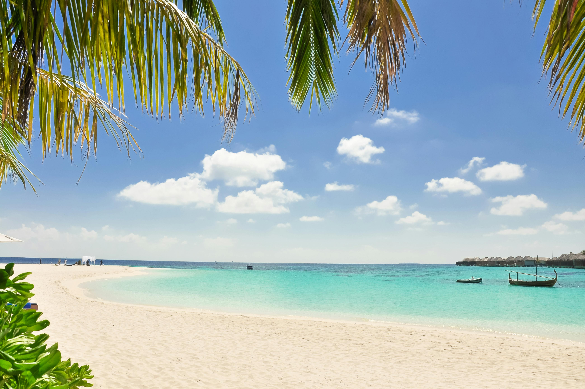

Maldives
The Maldives is a tropical paradise of crystal-clear waters and white sandy beaches. Located in the Indian Ocean, it’s a dream destination for honeymooners and travelers seeking relaxation. Visitors can stay in overwater villas, snorkel among coral reefs, and watch the sun set over turquoise lagoons. The Maldives offers pure tranquility and natural beauty like no other.
Every island in the Maldives feels like a private paradise. Colorful coral reefs surround the atolls, home to tropical fish, turtles, and manta rays. Guests can enjoy candlelit dinners by the ocean, go diving beneath crystal waters, or simply relax under swaying palm trees. Life here moves slowly, offering the perfect escape from the noise of the world — just endless sea, sky, and peace.
The Maldives is pure paradise — turquoise water, soft sand, and endless sunshine. Perfect for relaxing, snorkeling, or simply escaping reality. It’s a place where time slows down, and nature takes center stage.